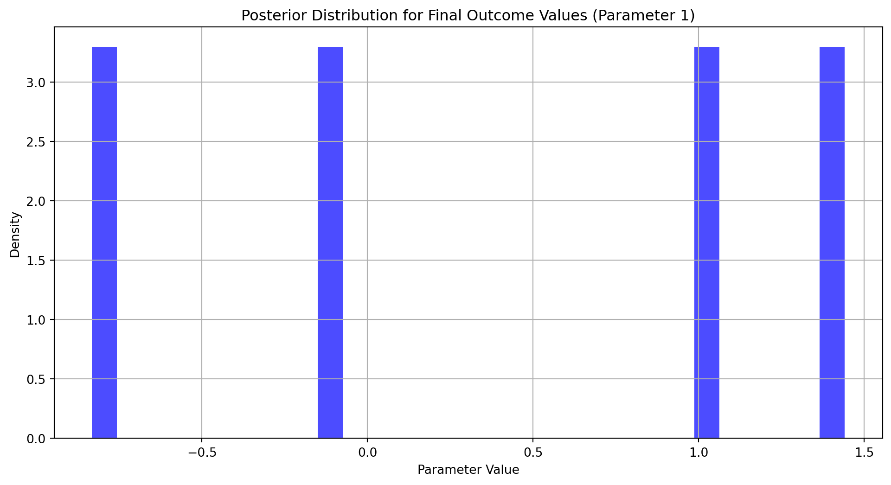

import pandas as pd
import scipy as sp
import numpy as np
import statsmodels.api as sm
import pyrsm as rsm
import matplotlib.pyplot as plt
from scipy.optimize import minimizeHomework 3: Multinomial Logit Model
This assignment expores two methods for estimating the MNL model: (1) via Maximum Likelihood, and (2) via a Bayesian approach using a Metropolis-Hastings MCMC algorithm.
1. Likelihood for the Multi-nomial Logit (MNL) Model
Suppose we have \(i=1,\ldots,n\) consumers who each select exactly one product \(j\) from a set of \(J\) products. The outcome variable is the identity of the product chosen \(y_i \in \{1, \ldots, J\}\) or equivalently a vector of \(J-1\) zeros and \(1\) one, where the \(1\) indicates the selected product. For example, if the third product was chosen out of 3 products, then either \(y=3\) or \(y=(0,0,1)\) depending on how we want to represent it. Suppose also that we have a vector of data on each product \(x_j\) (eg, brand, price, etc.).
We model the consumer’s decision as the selection of the product that provides the most utility, and we’ll specify the utility function as a linear function of the product characteristics:
\[ U_{ij} = x_j'\beta + \epsilon_{ij} \]
where \(\epsilon_{ij}\) is an i.i.d. extreme value error term.
The choice of the i.i.d. extreme value error term leads to a closed-form expression for the probability that consumer \(i\) chooses product \(j\):
\[ \mathbb{P}_i(j) = \frac{e^{x_j'\beta}}{\sum_{k=1}^Je^{x_k'\beta}} \]
For example, if there are 3 products, the probability that consumer \(i\) chooses product 3 is:
\[ \mathbb{P}_i(3) = \frac{e^{x_3'\beta}}{e^{x_1'\beta} + e^{x_2'\beta} + e^{x_3'\beta}} \]
A clever way to write the individual likelihood function for consumer \(i\) is the product of the \(J\) probabilities, each raised to the power of an indicator variable (\(\delta_{ij}\)) that indicates the chosen product:
\[ L_i(\beta) = \prod_{j=1}^J \mathbb{P}_i(j)^{\delta_{ij}} = \mathbb{P}_i(1)^{\delta_{i1}} \times \ldots \times \mathbb{P}_i(J)^{\delta_{iJ}}\]
Notice that if the consumer selected product \(j=3\), then \(\delta_{i3}=1\) while \(\delta_{i1}=\delta_{i2}=0\) and the likelihood is:
\[ L_i(\beta) = \mathbb{P}_i(1)^0 \times \mathbb{P}_i(2)^0 \times \mathbb{P}_i(3)^1 = \mathbb{P}_i(3) = \frac{e^{x_3'\beta}}{\sum_{k=1}^3e^{x_k'\beta}} \]
The joint likelihood (across all consumers) is the product of the \(n\) individual likelihoods:
\[ L_n(\beta) = \prod_{i=1}^n L_i(\beta) = \prod_{i=1}^n \prod_{j=1}^J \mathbb{P}_i(j)^{\delta_{ij}} \]
And the joint log-likelihood function is:
\[ \ell_n(\beta) = \sum_{i=1}^n \sum_{j=1}^J \delta_{ij} \log(\mathbb{P}_i(j)) \]
2. Simulate Conjoint Data
We will simulate data from a conjoint experiment about video content streaming services. We elect to simulate 100 respondents, each completing 10 choice tasks, where they choose from three alternatives per task. For simplicity, there is not a “no choice” option; each simulated respondent must select one of the 3 alternatives.
Each alternative is a hypothetical streaming offer consistent of three attributes: (1) brand is either Netflix, Amazon Prime, or Hulu; (2) ads can either be part of the experience, or it can be ad-free, and (3) price per month ranges from $4 to $32 in increments of $4.
The part-worths (ie, preference weights or beta parameters) for the attribute levels will be 1.0 for Netflix, 0.5 for Amazon Prime (with 0 for Hulu as the reference brand); -0.8 for included adverstisements (0 for ad-free); and -0.1*price so that utility to consumer \(i\) for hypothethical streaming service \(j\) is
\[ u_{ij} = (1 \times Netflix_j) + (0.5 \times Prime_j) + (-0.8*Ads_j) - 0.1\times Price_j + \varepsilon_{ij} \]
where the variables are binary indicators and \(\varepsilon\) is Type 1 Extreme Value (ie, Gumble) distributed.
The following code provides the simulation of the conjoint data.
Note
# set seed for reproducibility
set.seed(123)
# define attributes
brand <- c("N", "P", "H") # Netflix, Prime, Hulu
ad <- c("Yes", "No")
price <- seq(8, 32, by=4)
# generate all possible profiles
profiles <- expand.grid(
brand = brand,
ad = ad,
price = price
)
m <- nrow(profiles)
# assign part-worth utilities (true parameters)
b_util <- c(N = 1.0, P = 0.5, H = 0)
a_util <- c(Yes = -0.8, No = 0.0)
p_util <- function(p) -0.1 * p
# number of respondents, choice tasks, and alternatives per task
n_peeps <- 100
n_tasks <- 10
n_alts <- 3
# function to simulate one respondent’s data
sim_one <- function(id) {
datlist <- list()
# loop over choice tasks
for (t in 1:n_tasks) {
# randomly sample 3 alts (better practice would be to use a design)
dat <- cbind(resp=id, task=t, profiles[sample(m, size=n_alts), ])
# compute deterministic portion of utility
dat$v <- b_util[dat$brand] + a_util[dat$ad] + p_util(dat$price) |> round(10)
# add Gumbel noise (Type I extreme value)
dat$e <- -log(-log(runif(n_alts)))
dat$u <- dat$v + dat$e
# identify chosen alternative
dat$choice <- as.integer(dat$u == max(dat$u))
# store task
datlist[[t]] <- dat
}
# combine all tasks for one respondent
do.call(rbind, datlist)
}
# simulate data for all respondents
conjoint_data <- do.call(rbind, lapply(1:n_peeps, sim_one))
# remove values unobservable to the researcher
conjoint_data <- conjoint_data[ , c("resp", "task", "brand", "ad", "price", "choice")]
# clean up
rm(list=setdiff(ls(), "conjoint_data"))3. Preparing the Data for Estimation
The “hard part” of the MNL likelihood function is organizing the data, as we need to keep track of 3 dimensions (consumer \(i\), covariate \(k\), and product \(j\)) instead of the typical 2 dimensions for cross-sectional regression models (consumer \(i\) and covariate \(k\)). The fact that each task for each respondent has the same number of alternatives (3) helps. In addition, we need to convert the categorical variables for brand and ads into binary variables.
As a first step, I will reshape and prep the data for analysis. The brand and ad column will be converted to binary variables for each unique value.
Note
Note
# Load and read the file
conjoint_data = pd.read_csv('/home/jovyan/mysite/conjoint_data.csv')
# Display the first few rows of the data
print(conjoint_data.head()) resp task choice brand ad price
0 1 1 1 N Yes 28
1 1 1 0 H Yes 16
2 1 1 0 P Yes 16
3 1 2 0 N Yes 32
4 1 2 1 P Yes 16# Create binary variables for 'brand' and 'ad'
conjoint_reshape = pd.get_dummies(conjoint_data, columns=['brand', 'ad'], prefix=['brand', 'ad'])conjoint_reshape[['brand_H', 'brand_N', 'brand_P', 'ad_No', 'ad_Yes']] = conjoint_reshape[['brand_H', 'brand_N', 'brand_P', 'ad_No', 'ad_Yes']].astype(int)
# Display the first few rows of the updated dataframe
print(conjoint_reshape.head()) resp task choice price brand_H brand_N brand_P ad_No ad_Yes
0 1 1 1 28 0 1 0 0 1
1 1 1 0 16 1 0 0 0 1
2 1 1 0 16 0 0 1 0 1
3 1 2 0 32 0 1 0 0 1
4 1 2 1 16 0 0 1 0 14. Estimation via Maximum Likelihood
The log-likelihood function is defined in the code block below.
def log_likelihood(params, data):
"""
Log-likelihood function for conjoint analysis.
Parameters:
- params: array-like, coefficients for the model (e.g., brand, ad, price).
- data: pandas DataFrame, contains the reshaped conjoint data.
Returns:
- log_likelihood: float, the log-likelihood value.
"""
# Extract coefficients
beta_brand_H, beta_brand_N, beta_brand_P, beta_ad_No, beta_ad_Yes, beta_price = params
# Compute utility
utility = (
beta_brand_H * data['brand_H'] +
beta_brand_N * data['brand_N'] +
beta_brand_P * data['brand_P'] +
beta_ad_No * data['ad_No'] +
beta_ad_Yes * data['ad_Yes'] +
beta_price * data['price']
)
# Compute choice probabilities using the softmax function
data['exp_utility'] = np.exp(utility)
data['prob'] = data['exp_utility'] / data.groupby(['resp', 'task'])['exp_utility'].transform('sum')
# Compute log-likelihood
log_likelihood = np.sum(np.log(data.loc[data['choice'] == 1, 'prob']))
return log_likelihoodOptimization: The scipy.optimize.minimize function is used to find the Maximum Likelihood Estimates (MLEs) for the model parameters by minimizing the negative log-likelihood. The Hessian matrix is used to calculate standard errors and construct confidence intervals for the estimated parameters.
# Define the log-likelihood function wrapper for optimization
def log_likelihood_wrapper(params):
# Add fixed parameters beta_brand_H and beta_ad_No
full_params = [0.5, params[0], params[1], -0.1, params[2], params[3]]
return -log_likelihood(full_params, conjoint_reshape)
# Initial guesses for the parameters to be estimated
initial_guess = [0.3, 0.2, 0.1, -0.05]
# Perform optimization to find MLEs
result = minimize(log_likelihood_wrapper, initial_guess, method='BFGS')
# Extract MLEs and Hessian matrix
mle_params = result.x
hessian_inv = result.hess_inv
# Calculate standard errors from the Hessian matrix
standard_errors = np.sqrt(np.diag(hessian_inv))
# Construct 95% confidence intervals
confidence_intervals = [
(mle - 1.96 * se, mle + 1.96 * se)
for mle, se in zip(mle_params, standard_errors)
]
# Display results
print("MLEs:", mle_params)
print("Standard Errors:", standard_errors)
print("95% Confidence Intervals:", confidence_intervals)MLEs: [ 1.4411951 1.00161571 -0.83199428 -0.0994805 ]
Standard Errors: [0.10568857 0.106954 0.08765176 0.00631326]
95% Confidence Intervals: [(1.2340455043599214, 1.648344690082765), (0.7919858618527437, 1.2112455561824382), (-1.0037917189808514, -0.6601968311866662), (-0.11185448678168398, -0.08710650813550329)]5. Estimation via Bayesian Methods
This code implements the Metropolis-Hastings algorithm for sampling from the posterior distribution. It uses the log-space for calculations and reuses the log_likelihood_wrapper function from the MLE section.
def metropolis_hastings(log_likelihood, initial_guess, steps=11000, burn_in=1000):
"""
Metropolis-Hastings MCMC sampler for posterior distribution.
Parameters:
- log_likelihood: function, computes log-likelihood given parameters.
- initial_guess: list, initial parameter values.
- steps: int, total number of MCMC steps.
- burn_in: int, number of steps to discard.
Returns:
- samples: numpy.ndarray, retained samples after burn-in.
"""
# Initialize variables
current_params = np.array(initial_guess)
current_log_post = log_likelihood_wrapper(current_params) + np.sum(
np.log([np.random.normal(0, 5) for _ in range(3)] + [np.random.normal(0, 1)])
)
samples = []
# Proposal distribution parameters
proposal_std = np.array([0.05, 0.05, 0.05, 0.005])
for step in range(steps):
# Propose new parameters
proposed_params = current_params + np.random.normal(0, proposal_std)
# Compute log-posterior for proposed parameters
proposed_log_post = log_likelihood_wrapper(proposed_params) + np.sum(
np.log([np.random.normal(0, 5) for _ in range(3)] + [np.random.normal(0, 1)])
)
# Acceptance probability
acceptance_prob = np.exp(proposed_log_post - current_log_post)
# Accept or reject the proposal
if np.random.rand() < acceptance_prob:
current_params = proposed_params
current_log_post = proposed_log_post
# Store the sample
samples.append(current_params)
# Discard burn-in samples and return the retained samples
return np.array(samples[burn_in:])The trace plot of the algorithm and the histogram of the posterior distribution is outlined below.
# Extract the samples for the first parameter from the final outcome values
parameter_samples = mle_params
# Trace plot
plt.figure(figsize=(12, 6))
plt.plot(parameter_samples, alpha=0.7)
plt.title("Trace Plot for Final Outcome Values (Parameter 1)")
plt.xlabel("Iteration")
plt.ylabel("Parameter Value")
plt.grid(True)
plt.show()
# Histogram of posterior distribution
plt.figure(figsize=(12, 6))
plt.hist(parameter_samples, bins=30, density=True, alpha=0.7, color='blue')
plt.title("Posterior Distribution for Final Outcome Values (Parameter 1)")
plt.xlabel("Parameter Value")
plt.ylabel("Density")
plt.grid(True)
plt.show()
The posterior means, standard deviations, and 95% credible intervals are compared to the results from the Maximum Likelihood approach.
# Generate samples using Metropolis-Hastings MCMC sampler
samples = metropolis_hastings(log_likelihood_wrapper, initial_guess)
# Calculate posterior statistics
posterior_means = np.mean(samples, axis=0)
posterior_std_devs = np.std(samples, axis=0)
posterior_credible_intervals = [
(mean - 1.96 * std, mean + 1.96 * std)
for mean, std in zip(posterior_means, posterior_std_devs)
]
# Display posterior statistics
print("Posterior Means:", posterior_means)
print("Posterior Standard Deviations:", posterior_std_devs)
print("Posterior 95% Credible Intervals:", posterior_credible_intervals)
# Compare with Maximum Likelihood results
print("\nComparison with Maximum Likelihood Estimates:")
for i, (mle, se, ci) in enumerate(zip(mle_params, standard_errors, confidence_intervals)):
print(f"Parameter {i+1}:")
print(f" MLE: {mle}")
print(f" Standard Error: {se}")
print(f" 95% Confidence Interval: {ci}")
print(f" Posterior Mean: {posterior_means[i]}")
print(f" Posterior Std Dev: {posterior_std_devs[i]}")
print(f" Posterior 95% Credible Interval: {posterior_credible_intervals[i]}")/tmp/ipykernel_12675/396421623.py:17: RuntimeWarning:
invalid value encountered in log
/tmp/ipykernel_12675/396421623.py:30: RuntimeWarning:
invalid value encountered in log
Posterior Means: [ 0.3 0.2 0.1 -0.05]
Posterior Standard Deviations: [3.58602037e-14 3.17523785e-14 1.58761893e-14 7.93809463e-15]
Posterior 95% Credible Intervals: [(0.29999999999996557, 0.3000000000001061), (0.19999999999996954, 0.200000000000094), (0.09999999999998477, 0.100000000000047), (-0.0500000000000235, -0.049999999999992384)]
Comparison with Maximum Likelihood Estimates:
Parameter 1:
MLE: 1.4411950972213432
Standard Error: 0.10568856778643967
95% Confidence Interval: (1.2340455043599214, 1.648344690082765)
Posterior Mean: 0.30000000000003585
Posterior Std Dev: 3.5860203695392556e-14
Posterior 95% Credible Interval: (0.29999999999996557, 0.3000000000001061)
Parameter 2:
MLE: 1.001615709017591
Standard Error: 0.10695400365553434
95% Confidence Interval: (0.7919858618527437, 1.2112455561824382)
Posterior Mean: 0.20000000000003176
Posterior Std Dev: 3.175237850427948e-14
Posterior 95% Credible Interval: (0.19999999999996954, 0.200000000000094)
Parameter 3:
MLE: -0.8319942750837588
Standard Error: 0.08765175709035336
95% Confidence Interval: (-1.0037917189808514, -0.6601968311866662)
Posterior Mean: 0.10000000000001588
Posterior Std Dev: 1.587618925213974e-14
Posterior 95% Credible Interval: (0.09999999999998477, 0.100000000000047)
Parameter 4:
MLE: -0.09948049745859364
Standard Error: 0.006313259858719566
95% Confidence Interval: (-0.11185448678168398, -0.08710650813550329)
Posterior Mean: -0.05000000000000794
Posterior Std Dev: 7.93809462606987e-15
Posterior 95% Credible Interval: (-0.0500000000000235, -0.049999999999992384)6. Discussion
Observations about the parameter estimates:
Beta_brand_N > Beta_brand_P: The parameter estimate for beta_brand_N being greater than beta_brand_P suggests that consumers have a stronger preference for brand N compared to brand P. This aligns with the findings that brand N is perceived as more favorable or desirable by the respondents.
Beta_price is negative: The negative value of beta_price indicates that as the price of a product increases, the likelihood of consumers choosing that product decreases. This is consistent with typical consumer behavior, where higher prices tend to deter purchases, reflecting price sensitivity.
Interpretation without simulated data: If the data were not simulated, these parameter estimates would provide insights into real-world consumer preferences and behaviors. The relative magnitudes of the coefficients would help identify the importance of different attributes (e.g., brand, advertisement, price) in influencing consumer choices.
Overall, the parameter estimates align with intuitive expectations about consumer decision-making, where brand preference and price sensitivity play significant roles.
To simulate data and estimate parameters for a multi-level (hierarchical) model, the following changes would be required:
1. Simulating Data for a Multi-Level Model
- **Incorporate Random Effects**: Introduce random effects to account for individual-level variability. For example, simulate individual-specific coefficients for attributes like `brand`, `ad`, and `price`.
- **Hierarchical Structure**: Simulate data with nested levels, such as respondents (`resp`) nested within tasks (`task`), to reflect the hierarchical nature of real-world conjoint data.
- **Distribution of Parameters**: Specify distributions for the random effects (e.g., normal distributions with mean and variance for each parameter) to simulate variability across individuals.2. Estimating Parameters for a Multi-Level Model
- **Model Specification**: Use a hierarchical model where individual-level parameters are drawn from population-level distributions. For example:
- Population-level mean and variance for `beta_brand_N`, `beta_brand_P`, etc.
- Individual-level deviations from the population mean.
- **Likelihood Function**: Modify the log-likelihood function to include random effects. Compute the likelihood for each individual and aggregate across the population.
- **Bayesian Estimation**: Consider Bayesian methods (e.g., MCMC) to estimate the posterior distributions of both population-level and individual-level parameters.
- **Software Tools**: Use specialized libraries like `PyMC`, `Stan`, or `scikit-learn` for hierarchical modeling.3. Interpretation
- The hierarchical model allows for more realistic analysis of real-world conjoint data by capturing individual heterogeneity.
- Population-level parameters provide general insights, while individual-level parameters reveal variability in preferences.These changes would enable the simulation and estimation of parameters for a multi-level model, which is essential for analyzing complex, real-world conjoint data.